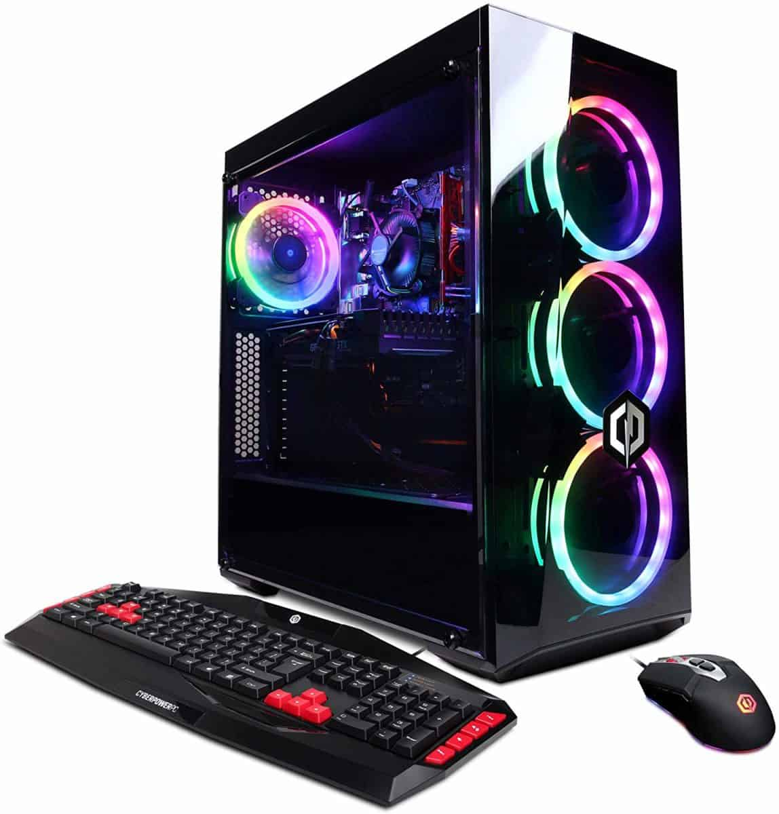
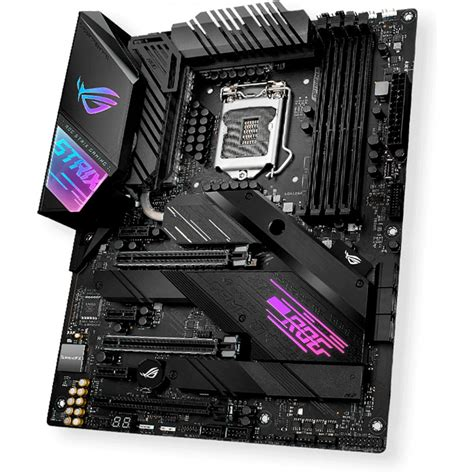

Guía para comprar un PC gaming: consejos y todo lo que debes saber para no equivocarte. 🤔😮
A la hora de comprar un PC gaming hay que tener en cuenta distintos factores: precio, componentes, o bien las opciones de actualizarlo. En esta guía vamos a enseñarte algunas de las características en las que tienes que fijarte al comprar tu ordenador para jugar.
¿Tu equipo se ha quedado obsoleto y ya no es capaz de ejecutar los últimos juegos? ¿Quieres hacerte con un PC más potente? Si la respuesta es afirmativa, es muy probable que te hayas planteado cambiar a un PC gaming. Si no sabes por dónde empezar, toma nota porque vamos a darte consejos sobre qué debes tener en cuenta al comprar un PC gaming.
A la hora de obtener un PC gamer, existen dos alternativas:
- La primera de ellas es comprar un ordenador gaming de marcas especializadas como Acer, Alienware, Asus, HP, Lenovo, MSI, etc.
- La segunda, es armarla por ti mismo, comprando las piezas individualmente seleccinoado entre un amplio catalogo que se ajuste a lo que necesitemos.

Componentes basicos de un PC. 💻
- Placa madre
- Procesador
- RAM
- Fuente de poder
- Tarjeta grafica
El futuro es la placa madre. 📈
La placa madre acostumbra a pasar bastante inadvertida en las especificaciones de la mayoría de PC gaming. Sin embargo, este componente representa la base sobre la que se asentarán las opciones para actualizaciones futuras.
 Ya que vas a hacer una inversión en un PC gaming, qué menos que asegurarte de que su placa base te asegure que en un futuro en el que puedas instalar un sistema de almacenamiento más rápido, y al que puedas añadirle una segunda tarjeta gráfica.